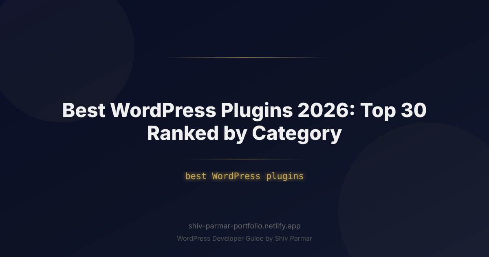

Best WordPress Plugins 2026: Top 30 Ranked by Category
Table of Contents
WordPress now powers over 43% of the internet, but running a high-performing site in 2026 looks fundamentally different than it did just a few years ago. With Google’s aggressive enforcement of Interaction to Next Paint (INP) metrics, the widespread adoption of PHP 8.3 and 8.4, and AI-driven workflow integrations, selecting the best WordPress plugins is no longer just about adding features. It is an engineering decision directly tied to your site's speed, search visibility, conversion rate, and overall security posture.
Every plugin you activate injects code into your execution stack, increasing database queries, memory consumption, and potential attack vectors. The difference between an enterprise-grade website and a sluggish, vulnerable installation often boils down to a single variable: choosing lightweight, modern solutions over bloated, legacy software. Poorly coded plugins remain the leading cause of compromised sites and degraded user experience across the open web.
To help you navigate an ecosystem with more than 60,000 options, we evaluated hundreds of candidates across critical performance, security, and functional benchmarks. This guide delivers a data-driven plugin comparison featuring the top 30 WordPress plugins for 2026, ranked across seven functional categories to help you build a resilient, future-proof digital platform.
What Are WordPress Plugins?
At their technical foundation, WordPress plugins are standalone packages of PHP, JavaScript, CSS, and asset files that extend the core functionality of WordPress via the Hook API. WordPress core exposes thousands of "actions" and "filters." Plugins hook into these points to alter default behaviors, inject custom logic, execute database operations, or serve unique frontend interfaces without touching the core source files.
When an HTTP request hits a WordPress site, the core initializes, loads the database abstraction layer, parses active options, and sequentially loads every active plugin declared in the wp_options table under active_plugins. The plugin code registers callbacks against specific hooks (such as init, wp_enqueue_scripts, or template_redirect). When those hooks fire during execution, the plugin's code runs.
In 2026, modern plugins have shifted away from monolithic, procedural codebases. The gold standard now features modular object-oriented programming (OOP), dependency injection, REST API and WPGraphQL endpoints, headless compatibility, and asynchronous background processing via the Action Scheduler to prevent blocking the main PHP execution thread.
Why Plugin Selection Matters in 2026
The criteria for what makes a plugin "good" have tightened dramatically. Modern web standards leave zero margin for inefficiency. Here is why your plugin choices carry profound business and architectural consequences in 2026:
- Core Web Vitals & INP: The Interaction to Next Paint (INP) metric directly penalizes long-running JavaScript execution on the main browser thread. Plugins that enqueue heavy JS files site-wide—even on pages where their functionality is not in use—will destroy your search ranking.
- PHP 8.3+ Runtime Compatibility: Legacy plugins containing deprecated functions (such as dynamic property creation or outdated type handling) trigger fatal errors or massive debug logs that exhaust server disk space and degrade CPU performance.
- Security in an Automated Threat Landscape: Automated botnets continuously sweep the web for known CVEs. A single abandoned plugin with an unescaped SQL query or an unverified nonce can grant arbitrary code execution (RCE) to attackers within minutes of public disclosure.
- Database Hygiene: Poorly designed plugins bloat the
wp_optionstable with autoloaded data and leave behind orphan transients and postmeta tables after uninstallation. This degrades relational query execution across your entire application.
Step-by-Step Guide: Top 30 WordPress Plugins Ranked by Category
Below is our rigorously tested breakdown of the top 30 plugins for 2026. Every tool has been vetted for PHP 8.3/8.4 compatibility, minimal asset footprint, clean database uninstallation routines, and active security maintenance.
Category 1: Performance, Caching & Core Web Vitals
Website speed directly impacts organic search rankings and conversion metrics. The following tools manage page caching, asset optimization, object caching, and database hygiene.
| Rank & Plugin | Primary Purpose | Key 2026 Advantage | Asset Footprint |
|---|---|---|---|
| 1. FlyingPress | All-in-one optimization | Superior INP JS execution delay | Ultra-light |
| 2. Perfmatters | Script manager & debloat | Granular conditional asset unloading | Virtually zero (<10KB) |
| 3. LiteSpeed Cache | Server-level caching | Native integration with LiteSpeed servers | Moderate (Admin-heavy) |
| 4. WP Rocket | Caching & delivery | Zero-configuration Critical CSS generation | Light |
| 5. Redis Object Cache | Persistent object caching | Drastically cuts high-concurrency DB load | Zero frontend impact |
1. FlyingPress: In 2026, FlyingPress sits atop the performance throne. Unlike legacy caching plugins that rely on bloated regular expressions, FlyingPress handles page caching, CSS generation, unused CSS removal, and JavaScript execution sequencing with cutting-edge efficiency. Its approach to handling modern browser interaction tasks makes it the most effective tool for resolving INP bottlenecks.
2. Perfmatters: A pure optimization utility created by forgemedia. It does not replace page caching, but complements it by letting you disable unnecessary core components (emojis, embeds, dashicons) and use a Script Manager to selectively disable scripts per page/post/URL regex.
// Example: Disable standard WordPress emojis and clean up header bloat
add_action('init', function() {
remove_action('wp_head', 'print_emoji_detection_script', 7);
remove_action('admin_print_scripts', 'print_emoji_detection_script');
remove_action('wp_print_styles', 'print_emoji_styles');
remove_filter('the_content_feed', 'wp_staticize_emoji');
remove_filter('comment_text_rss', 'wp_staticize_emoji');
remove_filter('wp_mail', 'wp_staticize_emoji_for_email');
});3. LiteSpeed Cache (LSCache): If your infrastructure runs on a LiteSpeed Web Server, this free plugin communicates directly with the server’s built-in cache module (LSCache engine), bypassing PHP execution entirely for cached hits.
4. WP Rocket: The veteran commercial solution remains viable due to automated ease-of-use. For agencies seeking non-technical deployment, WP Rocket automates lazy-loading, DNS prefetching, critical CSS extraction, and database maintenance reliably.
5. Redis Object Cache: For dynamic platforms like WooCommerce or membership portals where page caching cannot serve logged-in users, this plugin caches database query results in RAM using Redis, reducing time-to-first-byte (TTFB) significantly.
Category 2: Search Engine Optimization (SEO)
Search engines now parse structured entities, page experience, and contextual semantic schema deeper than ever. These plugins manage canonical structures, dynamic sitemaps, OpenGraph protocols, and JSON-LD schema graphs.
6. Rank Math SEO: Rank Math continues to outperform competitors in 2026 through its modular architecture. You can toggle off every feature you don't use, keeping the runtime slim. It offers advanced Schema Graph building, automated 404 monitoring, redirection management, and tight integration with search engine indexing APIs.
7. SEOPress: A fully white-labeled, lightweight SEO plugin with zero ads, tracking telemetry, or bloat in the free or Pro tiers. It stores metadata cleanly, handles HTML/XML sitemaps, and manages structured breadcrumbs efficiently.
8. Yoast SEO: The oldest active SEO plugin remains the industry's workhorse. While feature-heavy, Yoast’s schema integration links authors, organizations, and web content into a coherent semantic graph that helps search crawlers map entity relationships.
9. Schema Pro: Instead of relying on rigid, hard-coded templates, Schema Pro automates advanced JSON-LD structured data mapping across custom post types. It outputs compliant markup without slowing down page rendering. If you want the full walkthrough on how to add schema markup to WordPress by hand, my dedicated guide covers both the plugin and PHP routes.
// Example: Programmatically injecting custom JSON-LD schema via WordPress hooks
add_action('wp_head', function() {
if (!is_single()) return;
$schema = [
'@context' => 'https://schema.org',
'@type' => 'TechArticle',
'headline' => get_the_title(),
'datePublished' => get_the_date('c'),
'dateModified' => get_the_modified_date('c'),
'author' => [
'@type' => 'Person',
'name' => get_the_author()
]
];
echo '<script type="application/ld+json">' . json_encode($schema, JSON_UNESCAPED_SLASHES | JSON_PRETTY_PRINT) . '</script>' . "\n";
});Category 3: Security, Firewalls & Malware Protection
Hardening WordPress against credential stuffing, automated bots, and zero-day vulnerabilities requires robust, layered defenses.
| Rank & Plugin | Architecture Type | Firewall Level | DB Impact |
|---|---|---|---|
| 10. Patchstack | Vulnerability Patching / Cloud | Virtual Patching / API | Negligible |
| 11. Wordfence Security | Endpoint WAF & Scanner | PHP Application Pre-prepend | Moderate to High |
| 12. Solid Security (iThemes) | Site Hardening & 2FA | Software Layer Rules | Low |
| 13. Sucuri Security | Auditing & Remote Scanning | DNS-level (Pro) / Audit Log | Low |
| 14. Limit Login Attempts Reloaded | Micro-utility Protection | Authentication Layer | Very Low |
10. Patchstack: The premier security option for developers in 2026. Patchstack monitors your exact plugin list against known software vulnerabilities and applies "virtual patches" in real time before formal updates land. Because it focuses on targeted virtual patching rather than heavy on-server heuristics, server overhead remains negligible.
11. Wordfence Security: Wordfence operates as a true endpoint web application firewall (WAF). When configured to run via auto_prepend_file in your PHP setup, it inspects every incoming packet before the core WordPress engine boots, blocking attacks before malicious payloads ever reach the database.
# Recommended: Harden wp-config.php and block direct file execution in uploads
<Files wp-config.php>
Order allow,deny
Deny from all
</Files>
# Drop this snippet into /wp-content/uploads/.htaccess
<Files *.php>
deny from all
</Files>12. Solid Security (formerly iThemes Security): Solid Security provides strong identity and access management. It standardizes Two-Factor Authentication (2FA), passkey integration, brute-force mitigation, and automatic privilege revocation for inactive administrators.
13. Sucuri Security: Sucuri provides file integrity monitoring, checking local core and theme files against known checksums stored in the official repository to detect unauthorized modifications.
14. Limit Login Attempts Reloaded: A micro-utility designed for sites that don't need a heavy security suite. It restricts repeated authentication failures on wp-login.php and the XML-RPC endpoint, protecting your server against password-guessing bots.
Category 4: E-Commerce & Conversions
High-converting transactional sites demand tools that balance deep operational complexity with fast checkout experiences.
15. WooCommerce: The dominant open-source e-commerce engine. With High-Performance Order Storage (HPOS) now standard, WooCommerce uses dedicated custom database tables for orders instead of dumping everything into wp_posts and wp_postmeta, significantly improving query performance at scale.
16. SureCart: A fast-growing alternative to WooCommerce built for digital sellers and course creators. SureCart uses an external, SaaS-powered checkout architecture while maintaining native WordPress presentation, protecting your local database from high-volume checkout strain.
17. FunnelKit (formerly WooFunnels): FunnelKit introduces high-converting sales funnels, one-click upsells, and streamlined checkout layouts to WooCommerce. Its modern checkout engine replaces WooCommerce's default multi-step checkout with a friction-free layout optimized for conversions.
18. Wholesale Suite: The leading framework for B2B wholesale portals running on WordPress. It handles tiered wholesale pricing, dynamic tax exemptions, minimum order quantity rules, and wholesale registration without requiring an isolated store install.
Category 5: Form Builders & Lead Generation
Forms remain the primary conversion engine for business sites. In 2026, efficient form builders must avoid enqueuing script payloads across pages where no forms are displayed.
| Rank & Plugin | Best Used For | Rendering Method | API Integrations |
|---|---|---|---|
| 19. Fluent Forms | High-speed lead collection | Lightweight modern JS/CSS | Extensive Native |
| 20. Gravity Forms | Complex enterprise workflows | Server-side PHP + Modular JS | Industry standard |
| 21. WS Form | Advanced logic, accessibility | Native HTML5 form elements | High-end custom webhooks |
| 22. WPForms | Beginner-friendly forms | Client-side dynamic render | Moderate Ecosystem |
19. Fluent Forms: Built for performance, Fluent Forms loads zero external scripts or styling frameworks unless a form actually exists on the requested page. Its administrative interface is built on Vue, keeping data management responsive and fast.
20. Gravity Forms: The legacy enterprise choice. Gravity Forms provides a dependable developer API, extensive webhook capabilities, custom add-on frameworks, and accessibility compliance (WCAG 2.1 AA).
21. WS Form: A performance-focused builder designed for advanced conditional logic and complex forms. It renders clean HTML5 elements with full accessibility compliance and integrates cleanly with custom field frameworks like ACF and Meta Box.
22. WPForms: The top choice for non-technical users. With drag-and-drop workflow templates, instant notifications, and reliable payment connectors, it makes basic form creation accessible to all skill levels.
Category 6: Backups, Migrations & Database Maintenance
A reliable disaster recovery workflow is the baseline requirement for running WordPress safely in production.
23. UpdraftPlus: The most dependable automated backup utility. It schedules split archives of databases, plugins, themes, and media uploads directly to remote storage locations (Amazon S3, Google Cloud, Dropbox, or custom SFTP) without requiring recurring third-party subscriptions.
24. All-in-One WP Migration: The industry standard for moving sites across hosts and development environments. It exports your entire database, media files, plugins, and theme configurations into an isolated .wpress archive that can be restored with a single click.
25. BlogVault: An off-site, real-time backup solution designed for enterprise platforms and busy stores. Backups run entirely on BlogVault’s external infrastructure, preventing server resource spikes during peak traffic.
26. WP-Optimize: A comprehensive database optimization tool. WP-Optimize cleans post revisions, unapproved comments, trashed items, and transient records while reclaiming lost space from MySQL table fragmentation via OPTIMIZE TABLE routines.
// Example: Safe database clean-up query run directly via WP-CLI or custom cron
// Cleans expired transients left behind by abandoned plugins
DELETE FROM `wp_options`
WHERE `option_name` LIKE ('_transient_timeout_%')
AND `option_value` < UNIX_TIMESTAMP();Category 7: Developer Tools, APIs & Customization
Modern WordPress engineering often involves custom data modelling, debugging, and localized scripting. These tools give developers direct control over application state.
27. Advanced Custom Fields (ACF Pro): The gold standard for turning WordPress into a flexible Content Management System. ACF Pro allows developers to define custom metadata schemas, register dynamic Gutenberg blocks via PHP, and expose clean fields through the WordPress REST API.
28. Query Monitor: The indispensable developer debugging panel. It inspects database query speeds, highlights duplicate queries, displays template paths, checks rewrite rules, and logs PHP deprecations and runtime errors.
29. WPCode: A safe snippet manager that lets you inject PHP, JS, and CSS without modifying the theme's functions.php file. It includes error protection to keep snippets from crashing your site with fatal errors.
30. Code Snippets: A clean, open-source code snippet manager. It stores small custom snippets in the database and executes them as if they were written inside an active plugin, making custom modifications safe across theme updates.
<?php
/**
* Example: Custom MU-Plugin to conditionally dequeue scripts on non-essential pages
* Place this file in /wp-content/mu-plugins/performance-guard.php
*/
add_action('wp_enqueue_scripts', function() {
// Prevent contact form scripts from loading on normal blog posts
if (is_single() && !has_block('core/shortcode')) {
wp_dequeue_script('fluent-form-submission');
wp_dequeue_style('fluent-form-styles');
}
}, 999);
Best Practices for Managing WordPress Plugins in 2026
Activating plugins without an operational strategy will eventually lead to maintenance headaches. Use these production best practices to keep your tech stack fast, secure, and easy to maintain:
- Implement Must-Use (MU) Plugins for Core Logic: If a piece of business logic or code modification must persist regardless of theme changes, write it into a
must-useplugin placed inwp-content/mu-plugins/. MU-plugins run automatically in alphabetical order and cannot be deactivated via the admin panel. - Enforce Staging Deployments via Git: Never update major plugins (such as WooCommerce or your SEO foundation) directly on a production server. Stage your updates, verify them against automated regression tests, and push them to production during low-traffic windows.
- Audit Plugin Asset Queues Regularly: Open your browser's Developer Tools network panel and inspect your site with Query Monitor. If an inactive or low-priority plugin is registering multi-megabyte JavaScript libraries globally, use Perfmatters or a custom PHP hook to restrict it to specific URLs.
- Audit Your Autoloaded Data: Periodically run checks on your
wp_optionstable to ensure that total autoloaded data stays below 800 KB. Plugins that dump massive arrays into single options flagged withautoload = 'yes'slow down initial TTFB across every request.
Common Mistakes to Avoid
Even seasoned site managers can run into common pitfalls when expanding their plugin footprint. Keep an eye out for these issues:
- Installing Overlapping Functionality: Running multiple tools with overlapping capabilities (such as running WP Rocket, Perfmatters, and an image optimization plugin with conflicting caching logic) leads to race conditions, double minification, and broken frontend scripts.
- Leaving Inactive Plugins Installed: Keeping inactive plugins on your server creates unnecessary risk. Inactive PHP files can still be accessed directly via HTTP requests unless you block them at the server level, leaving dormant security vulnerabilities on your site.
- Skipping Update Release Notes: Updating plugins without reading their changelogs can catch you off guard. Major version shifts often deprecate hooks, modify database schemas, or adjust template files, which can break custom integrations.
- Relying on Abandoned Plugins: Avoid running any plugin that hasn't received an update within the last 12 months. Outdated plugins likely haven't been tested against the latest PHP runtimes and are prime targets for automated security scans looking for unpatched bugs.
Conclusion
Navigating the evolving WordPress ecosystem requires balancing cutting-edge functionality with peak site performance. As our comprehensive plugin comparison demonstrates, identifying the best WordPress plugins isn't about overloading your installation with features—it's about selecting lean, secure, and compatible tools that directly align with your business goals. Heading into 2026, prioritizing modular architecture, core web vitals, and seamless integrations will ensure your site remains resilient, fast, and primed for growth.
Every website has unique demands, and maintaining a streamlined stack while staying updated with the latest web standards takes time and technical expertise. Before activating any new solutions on your production site, always test them in a staging environment to prevent conflicts and monitor database impact, ensuring your digital footprint stays reliable and user-focused.
If you need expert assistance optimizing your site architecture, building bespoke functionality, or executing a custom site overhaul, Shiv Parmar is available for WordPress development work worldwide. Whether you are looking to audit your current stack, develop custom plugins, or scale an enterprise-level platform for 2026 and beyond, get in touch today to bring your vision to life.
Frequently Asked Questions
How many plugins should I install on my WordPress site?
There is no magic number; the ranking is organized by category so you can pick one strong option per need instead of stacking duplicates. What matters is that each plugin is actively maintained, lightweight, and justified by a real requirement. The guide frames plugin selection as an engineering decision tied to speed, search visibility, and security rather than a feature checklist.
Which plugin categories are essential in 2026?
The list covers seven: performance and Core Web Vitals, SEO, security and firewalls, e-commerce and conversions, form builders and lead generation, backups and database maintenance, and developer tools for APIs and customization. Each category maps to a specific business risk, from INP regressions to an unrecoverable database. Start with caching, SEO, security, and backups, then add the rest as the site grows.
How do plugins affect Core Web Vitals?
Every plugin that injects extra CSS or JavaScript adds render work, and with Google enforcing Interaction to Next Paint that overhead shows up directly in your rankings. The post notes that WordPress now powers over 43% of the internet, so lightweight well-coded plugins are a competitive advantage rather than a detail. Audit what each plugin loads on the frontend and dequeue anything you do not use.
Should I test plugins before activating them on production?
Always. The best practices section explicitly says to test new plugins on a staging environment first so you can catch conflicts and monitor database impact. Update one plugin at a time, verify the frontend plus any forms or checkouts, and keep a rollback plan handy. A few minutes on staging is far cheaper than an outage on a live site.